|
Roda JC - Ajax 1-1 (16 april 2001) deel 3 |
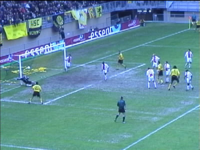
In de 60e min. kopte Vrede op de paal. Grim kreeg de bal
niet te pakken.....
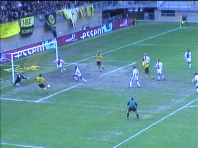
.....en via de rebound scoorde Ioannis Anastasiou de 1-0.
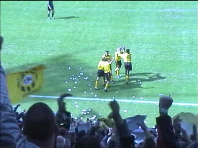
Vreugde!
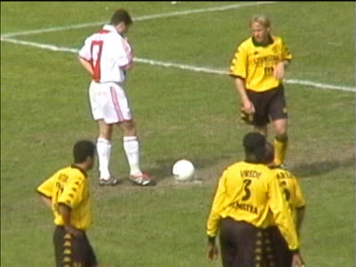
2 minuten later veroorzaakte senden een penalty die genomen
werd door Arveladze.
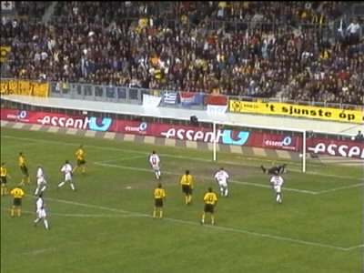
En zo werd het helaas 1-1.
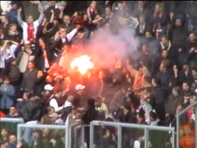
En zo was er voor het eerst sinds de opening weer eens
vuurwerk te zien in het PLS.
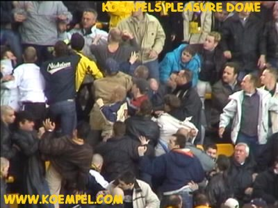
Op west volgde er nog wat duw- en trekwerk.
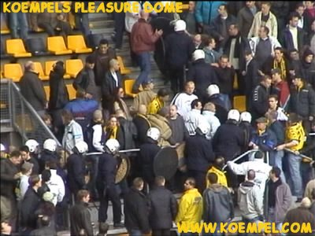
Daardoor moest de ME wederom opdraven.
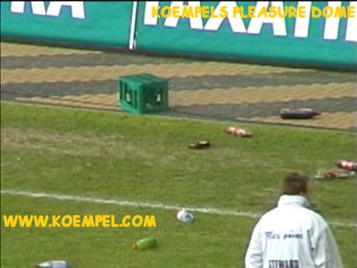
Als dank voor het aangenaam verpozen gooiden de stoute
Ajacieden het veld vol met flessen en kratten die ze buit
hadden gemaakt bij de catering. Op Kaalhei staken ze ver-
leden seizoen kuipstoeltjes en een spandoek in brand. Echt
helpen doen die boetes dus niet.
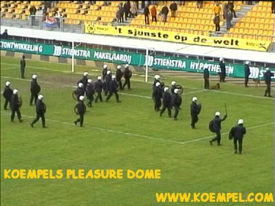
En zo mocht de ME andermaal overuren bijschrijven.
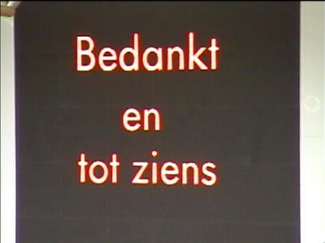
En wel bij Roda JC - Sparta aanstaande zaterdag!
©KPD